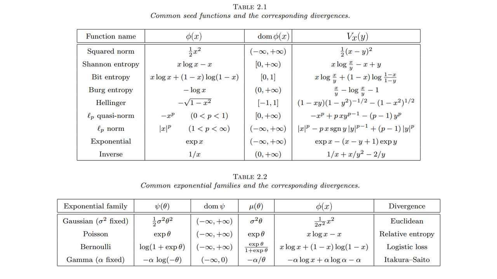
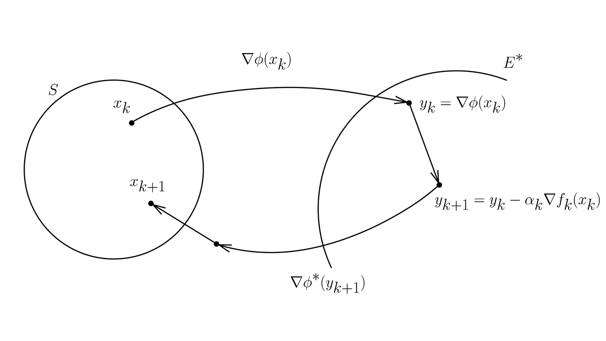
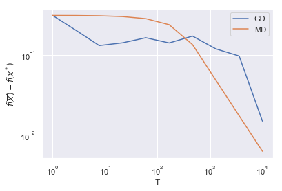

Mirror descent
Метод зеркального спуска является естественным обобщением метода проекции субградиента в случае обобщения l_2 нормы на более общий случай какой-то функции расстояния.
0.1 Dual norm:
Определение: Сопряженной нормой \|\cdot\|_* к данной \|\cdot\| называется:
\|y\|_* = \max \{\langle y,x\rangle: \|x\|=1 \}
Пример: (\|\cdot \|_p)_* = \|\cdot \|_q, \qquad \dfrac{1}{p} + \dfrac{1}{q} = 1
Доказательство:
Неравенство Гельдера:
\sum_{k=1}^n |x_k\,y_k| \le \biggl( \sum_{k=1}^n |x_k|^p \biggr)^{\frac{1}{p}} \biggl( \sum_{k=1}^n |y_k|^q \biggr)^{\frac{1}{q}} \text{ for all }x, y \in \mathbb{C}^n
Свойства:
- Двойственная норма \|\cdot\|_* является нормой
- l_2 норма сопряжена сама себе
- Двойственная норма к двойственной норме - исходная норма
- (\|\cdot\|_1)_* = \|\cdot\|_\infty, \;(\|\cdot\|_\infty)_* = \|\cdot\|_1
- Обобщенное неравенство Коши Шварца: \langle y,x \rangle \leq \|y\|_*\|x\|, следствие: \|x\|^2 \pm 2 \langle y,x \rangle + \|y\|_*^2 \geq 0
0.2 Bregman divergence
Попробуем интуитивно ввести понятие обобщенного расстояния, именуемого расстоянием Брэгмана. Для каждой точки y она возвращает расстояние этой точки до x - V_x(y). В самом простом случае можно взять V_x(y) = \frac{1}{2}\|x-y\|^2, \;\; \nabla V_x(y) = y-x. Рассмотрим уже классическую запись:
\begin{align*} \|x_{k+1} - y\|^2 &= \|x_{k+1}-x_k \|^2 + \|x_k - y\|^2 - 2 \langle x_k - x_{k+1} ,x_k - y\rangle \\ \tag{Req1} V_{x_{k+1}}(y) &= V_{x_{k+1}}(x_k) + V_{x_{k}}(y) - \langle \nabla V_{x_{k+1}(x_k)}, x_k - y \rangle \end{align*}
Для вводимого обобщенного расстояния будем требовать выполнения (Req1), кроме того (как будет видно при получении оценок), приятным свойством было бы еще следующее требование:
\tag{Req2} V_x(y) \geq \frac{1}{2} \|x-y\|^2
Определение: Дивергенцией (расстоянием) Брэгмана называется функция следующая V_x(y). Пусть S \subseteq \mathbb{R}^n - замкнутое выпуклое множество, тогда функция \phi : S \to \mathbb{R} называется прокс-функцией (distance generating function), если \phi является 1 - сильно выпуклой, т.е.:
\phi(y) \geq \phi(x) + \langle \nabla \phi(x), y-x\rangle + \frac{1}{2} \|y-x\|^2, \qquad \forall x,y \in S
Тогда прокс-функцией индуцируется расстояние Брэгмана:
V_x(y) = \phi(y) - \phi(x) - \langle\nabla \phi(x), y-x\rangle
Заметим, что определение сильной выпуклости зависит от выбора прямой нормы \|\cdot\|. Это важное замечание, поскольку именно это свойство позволит в будущем подстраивать расстояние под геометрию пространства.
0.2.1 Examples
- Выберем норму в прямом пространстве \|\cdot\| = \|\cdot\|_2, пусть \phi(x) = \frac{1}{2}\|x\|^2, тогда расстояние Брэгмана V_x(y) = \frac{1}{2}\|x-y\|^2. Такой выбор совпадает с тем, что мы видели ранее в методе проекции субградиента
- Выберем теперь другую норму \|\cdot\| = \| \cdot \|_1, пусть \phi(x) = \sum\limits_{i \in [n]}x_i \log x_i - антиэнтропия. Тогда эта функция будет 1 сильно выпукла на выпуклом множестве S : \left\{x \in S : x \geq 0, \sum\limits_{i \in [n]} x_i = 1\right\} (вероятностном симплексе), а соответствующая ей дивергенция Брэгмана: V_x(y) = \sum\limits_{i \in [n]} y_i \log \frac{y_i}{x_i} = D(y \| x) - расстояние Кульбака - Ляйблера.
- Еще немного примеров отсюда:

0.2.2 Свойства
- Аксиома тождества V_x(x) = 0
- Совместимость с Евклидовой нормой: V_x(y) \geq \frac{1}{2}\|x-y\|^2 \geq 0
- (Не)равенство треугольника: \langle -\nabla V_x(y), y-z\rangle = V_x(z) - V_y(z) - V_x(y)
Первые два свойства очевидны из определения. Докажем третье:
\begin{align*} \langle -\nabla V_x(y), y-z\rangle &= \langle \nabla \phi(x) - \nabla \phi(y) , y-z\rangle =\\ & = (\phi(z) - \phi(x) - \langle \nabla \phi(x), z -x \rangle) \\ & - (\phi(z) - \phi(y) - \langle \nabla \phi(y), z - y \rangle) \\ & - (\phi(y) - \phi(x) - \langle \nabla \phi(x), y - x \rangle) \\ & = V_x(z) - V_y(z) - V_x(y) \end{align*}
1 Возвращение к истокам
Пусть задано выпуклое замкнутое множество S \in \mathbb{R}^n, кроме того, есть алгоритм оптимизации, возвращающий последовательность точек x_1, \ldots, x_k, \ldots. Тогда запишем (не)равенство треугольника для расстояния Брэгмана, полагая y = x_{k+1}, x = x_k и произвольный z \in S (который мы в дальнейшем для целостности изложения будем обозначать y)
\begin{align*} \langle -\nabla V_{x_k}(x_{k+1}), x_{k+1}-z\rangle &= V_{x_k}(z) - V_{x_{k+1}}(z) - V_{x_k}(x_{k+1}) \\ \tag{baseMD} \langle -\nabla V_{x_k}(x_{k+1}), x_{k+1}-y\rangle &= V_{x_k}(y) - V_{x_{k+1}}(y) - V_{x_k}(x_{k+1}) \end{align*}
Просуммируем полученные равенства:
\sum\limits_{k = 0}^{T-1}\langle -\nabla V_{x_k}(x_{k+1}), x_{k+1}-y\rangle = V_{x_0}(y) - V_{x_{T}}(y) - \sum\limits_{k = 0}^{T-1}V_{x_k}(x_{k+1})
Имея ввиду полученное уравнение, давайте, наконец, попробуем сформулировать метод зеркального спуска:
x_{k+1} = \text{arg}\min\limits_{x \in S} \left( \langle \alpha_k g_k, x \rangle + V_{x_k}(x) \right)
Посмотрим внимательнее на условие проекции для точки x_{k+1}:
\langle \alpha_k g_k,x_{k+1} - y\rangle + \langle \nabla V_{x_k}(x_{k+1}),x_{k+1} - y\rangle \leq 0
\langle \alpha_k g_k,x_{k+1} - y\rangle \leq - \langle \nabla V_{x_k}(x_{k+1}),x_{k+1} - y\rangle
Попробуем теперь получить наше базовое неравенство, используя (baseMD):
\begin{align*} \langle \alpha_k g_k, x_k - y\rangle &\leq - \langle \nabla V_{x_k}(x_{k+1}),x_{k+1} - y\rangle - \langle \alpha_k g_k, x_{k+1} - x_k\rangle = \\ & = V_{x_k}(y) - V_{x_{k+1}}(y) - V_{x_k}(x_{k+1})- \langle \alpha_k g_k, x_{k+1} - x_k\rangle \leq\\ &\leq V_{x_k}(y) - V_{x_{k+1}}(y) - \frac{1}{2}\|x_k - x_{k+1}\|^2- \langle \alpha_k g_k, x_{k+1} - x_k\rangle \leq \\ &\leq V_{x_k}(y) - V_{x_{k+1}}(y) + \left(\langle \alpha_k g_k, x_k - x_{k+1}\rangle- \frac{1}{2}\|x_k - x_{k+1}\|^2 \right) \leq \\ &\leq V_{x_k}(y) - V_{x_{k+1}}(y) + \frac{\alpha_k^2}{2} \|g_k\|_*^2 \end{align*}
ТЕЛЕСКОПИРУЕМ
\begin{align*} \sum\limits_{k = 0}^{T-1} \langle \alpha_k g_k, x_k - y\rangle &\leq V_{x_0}(y) - V_{x_{T}}(y) + \sum\limits_{k = 0}^{T-1}\frac{\alpha_k^2}{2} \|g_k\|_*^2 \\ &\leq V_{x_0}(y) + \sum\limits_{k = 0}^{T-1}\frac{\alpha_k^2}{2} \|g_k\|_*^2 \\ &\leq M + \dfrac{\alpha^2 G^2 T}{2} \end{align*}
Здесь мы подразумеваем \|g_k\|_* \leq G равномерно по k, а V_{x_0}(y) \leq M. В итоге:
\begin{align*} f(\overline{x}) - f^* &= f \left( \frac{1}{T}\sum\limits_{k=0}^{T-1} x_k \right) - f^* \leq \dfrac{1}{T} \left( \sum\limits_{k=0}^{T-1} f(x_k) - f^* \right) \\ & \leq \dfrac{1}{T} \left( \sum\limits_{k=0}^{T-1}\langle g_k, x_k - x^* \rangle\right) \\ & \leq \dfrac{M}{\alpha T} + \dfrac{\alpha G^2}{2} \leq \sqrt{\dfrac{2 M G^2}{T}} \end{align*}
Выбирая шаг \alpha_k = \alpha = \sqrt{\dfrac{2M}{G^2 T}}
1.1 Алгоритм зеркального спуска (mirror descent):
x_{k+1} = \text{arg}\min\limits_{x \in S} \left( \langle \alpha_k g_k, x \rangle + V_{x_k}(x) \right)
Интересные фишки:
- Такая же скорость сходимости, как и для метода проекции субградиента.
- Работает в существенно более широком классе практических задач
1.2 Онлайн версия
Совершенно ясно, что в наших оценках на каждом шаге может быть новая функция f_k(x) на заданном классе. Поэтому, аналогичные оценки получаются и для онлайн постановки:
R_{T-1} = \sum\limits_{k = 0}^{T-1} f_k(x_k) - \min_{x} \sum\limits_{k = 0}^{T-1} f_k(x) \leq \sqrt{2 M G^2 T}
\overline{R_{T-1}} = \dfrac{1}{T}R_{T-1} \leq \sqrt{\dfrac{2 M G^2}{T}}
1.3 Еще одна интерпретация
Давайте покажем, что полученный алгоритм имеет еще одну очень интуитивную интерпретацию:
- y_{k} = \nabla \phi(x_k) Отображение в сопряженное пространство с помощью функции \nabla \phi(x)
- y_{k+1} = y_k - \alpha_k \nabla f_k(x_k) Градиентный шаг в сопряженном пространстве
- x_{k+1} = \text{arg}\min\limits_{x \in S}V_{\nabla \phi^*(y_{k+1})}(x) Обратное отображение с помощью функции \nabla \phi^*(x) и проекция на бюджетное множество

Для доказательства эквивалентности таких записей, следует сначала доказать факт того, что:
\left( \nabla \phi(x) \right)^{-1} = \nabla \phi^*(y)
Для этого пусть y = \nabla \phi(x). Заметим, что для сопряженной функции справедливо неравенство Фенхеля - Юнга: \phi^*(y) + \phi(x) \geq xy, в случае, если \phi(x) - дифференцируема, такое преобразование называется преобразованием Лежандра и выполняется равенство: \phi^*(y) + \phi(x) = xy. Дифференцируя равенство по y, получаем \nabla \phi^*(y) = x. Таким образом,
\nabla\phi^*(y) = \nabla\phi^*(\nabla \phi(x)) = x, \qquad \nabla\phi(x) = \nabla\phi(\nabla \phi^*(y)) = y
Доказательство:
\begin{align*} x_{k+1} &= \text{arg}\min\limits_{x \in S} \left\{ V_{\nabla \phi^*(y_{k+1})}(x) \right\} = \\ &= \text{arg}\min\limits_{x \in S} \left\{ \phi(x) - \phi(\nabla \phi^*(y_{k+1})) - \left\langle \nabla \phi (\nabla \phi^*(y_{k+1})),x - \nabla \phi^*(y_{k+1})\right\rangle\right\} = \\ &= \text{arg}\min\limits_{x \in S} \left\{ \phi(x) - \left\langle y_{k+1},x \right\rangle \right\} = \\ &= \text{arg}\min\limits_{x \in S} \left\{ \phi(x) - \left\langle \nabla \phi(x_k) - \alpha_k g_k,x \right\rangle \right\} = \\ &= \text{arg}\min\limits_{x \in S} \left\{ \phi(x) - \phi(x_k) - \left\langle \nabla \phi(x_k),x \right\rangle + \left\langle \alpha_k g_k,x \right\rangle \right\} = \\ &= \text{arg}\min\limits_{x \in S} \left\{ V_{x_k}(x) + \left\langle \alpha_k g_k,x \right\rangle \right\} \end{align*}
В последней строчке мы пришли к той формулировке, которую писали раньше. Заметим так же, еще одну интересную концепцию:
\begin{align*} x_{k+1} &= \text{arg}\min\limits_{x \in S} \left( \langle \alpha_k g_k, x \rangle + V_{x_k}(x) \right) \\ &= \text{arg}\min\limits_{x \in S} \left( \langle g_k, x \rangle + \frac{1}{\alpha_k}V_{x_k}(x) \right) \\ &= \text{arg}\min\limits_{x \in S} \left(f(x_k)+ \langle g_k, x \rangle + \frac{1}{\alpha_k}V_{x_k}(x) \right) \end{align*}
Здесь левая часть минимизируемого выражения представляет собой аппроксимацию первого порядка, а правая часть представляет собой проекционный член.
2 НАФИГА?
Резонный вопрос, ведь в случае, если мы выбрали \|\cdot\| = \|\cdot\|_2 Евклидову норму и Евклидово расстояние, то этот метод в точности совпадает с тем, что мы уже называем метод проекции субградиента.
Значит, надо предоставить сценарий, когда МЗС работает лучше, давайте рассмотрим S = \Delta_n - вероятностный симплекс, а так же следующее расстояние Брэгмана V_x(y) = \sum_{i \in [n]} y_i \log \frac{y_i}{x_i} = D(y \| x). Норма в прямом пространстве при этом \|\|_1, а в сопряженном - \|\|_\infty. Кроме того, для заданной дивергенции Брэгмана справедливо:
x_0 = \left( 1/n, \ldots, 1/n \right) \; \to \; V_{x_0}(x) \leq \log n \;\;\forall x \in \Delta_n
Тогда алгоритм зеркального спуска запишется в виде:
\begin{align*} x_{k+1} &= \text{arg}\min\limits_{x \in S} \left( \langle \alpha_k g_k, x \rangle + V_{x_k}(x) \right) \\ &= \text{arg}\min\limits_{x \in S} \left( \langle \alpha_k g_k, x \rangle + \sum_{i \in [n]} x_i \log \frac{x_i}{x_{k_i}} \right) \\ &= x_k \cdot \dfrac{e^{-\alpha_k g_k}}{\|x_k \cdot e^{-\alpha_k g_k}\|_1} \end{align*}
А оценки с учетом того, что M = \log n, \|g_k\|_\infty \leq G запишутся, как:
\begin{align*} f(\overline{x}) - f^* \leq \sqrt{\dfrac{2 \log (n) G^2}{T}} \end{align*}

import numpy as np
from matplotlib import pyplot as plt
%matplotlib inline
import seaborn as sns
sns.set()
Ts = np.logspace(0,4, 10)
m = 10
n = 1000
A = np.random.randn(m, n)
x_true = np.random.randn(n)
x_true[x_true < 0] = 0
x_true = x_true/(np.linalg.norm(x_true, 1))
b = A@x_true
x0 = np.ones(n)/n
def f(x):
return np.linalg.norm(A@x - b, 1)
def grad(x):
return np.sum(A.T * np.sign(A@x - b), axis=1)
def mirror_descent(x0, grad, T):
n = len(x0)
M = np.log(n)
## G = np.linalg.norm(A,np.inf)*1+np.linalg.norm(b,np.inf)
## alpha = np.sqrt(2*M/(G**2*T))
alpha = 0.0001
xk = x0
sequence = []
## print('MD %.3f'%alpha)
for i in range(int(T)):
sequence.append(xk)
g = grad(xk)
xk = xk * np.exp(-alpha * g) / np.sum(xk * np.exp(-alpha * g))
return sequence
def projection_subgradient_descent(x0, grad, T):
n = len(x0)
M = 0.5
## G = np.linalg.norm(A,2)*1+np.linalg.norm(b,2)
## alpha = np.sqrt(2*M/(G**2*T))
alpha = 0.0001
## print('GD %.3f'%alpha)
xk = x0
sequence = []
for i in range(int(T)):
sequence.append(xk)
g = grad(xk)
xk = xk - alpha*g
xk[xk<0] = 0
xk = xk/(np.linalg.norm(xk, 1))
return sequence
result_md = []
result_gd = []
for T in Ts:
print(T)
md_T = mirror_descent(x0, grad, T)
gd_T = projection_subgradient_descent(x0, grad, T)
x_md = np.mean(md_T, axis = 0)
x_gd = np.mean(gd_T, axis = 0)
result_md.append(f(x_md) - f(x_true))
result_gd.append(f(x_gd) - f(x_true))
plt.loglog(Ts, result_gd, label = 'GD')
plt.loglog(Ts, result_md, label = 'MD')
plt.xlabel('T')
plt.ylabel(r'$f(\overline{x}) - f(x^*)$')
plt.legend()